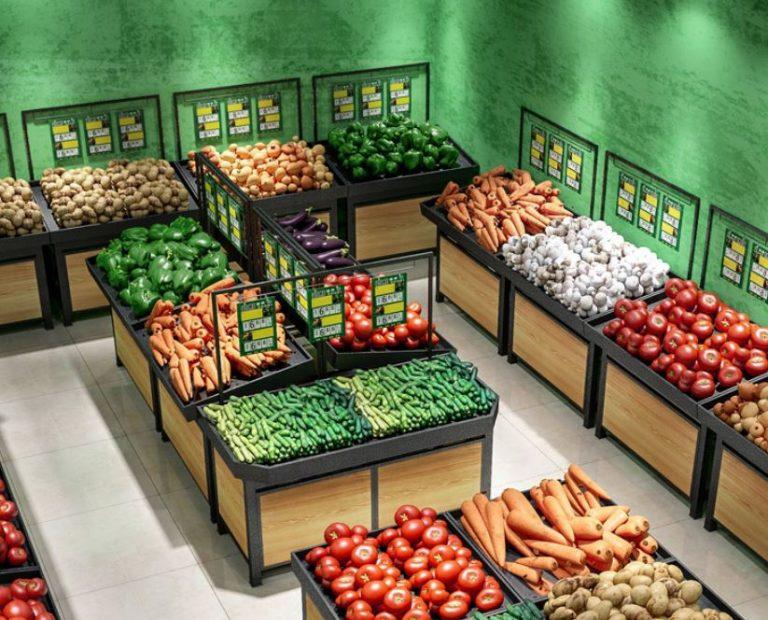
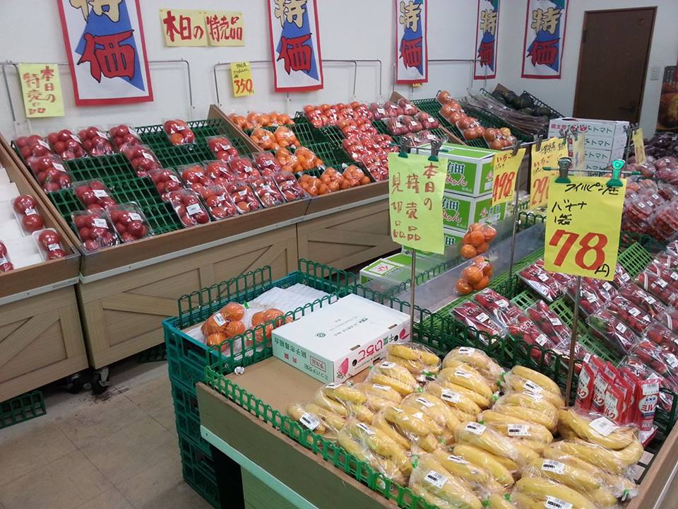

Tentang Kami

Website sayuran kami, yang dibentuk pada tahun 2023, telah membuktikan diri sebagai alat yang sangat efektif untuk mengenalkan toko sayuran Anda kepada pelanggan potensial. Dengan informasi mendalam tentang berbagai jenis
sayuran, resep kreatif, dan panduan tentang cara memilih dan menyimpan sayuran dengan baik, kami telah mendorong minat konsumen dalam memasukkan lebih banyak sayuran ke dalam pola makan mereka. Dengan menyediakan rekomendasi
produk sayuran dari toko Anda dalam beberapa resep yang kami bagikan, kami telah memberikan nilai tambah yang signifikan bagi pelanggan Anda. Selain itu, kami juga mempromosikan produk-produk unggulan toko Anda melalui ulasan
positif dan fitur khusus di situs kami. Hal ini telah membantu meningkatkan kesadaran dan penjualan produk sayuran dari toko Anda secara signifikan, menjadikan kerjasama dengan kami sebagai langkah yang cerdas untuk memperluas
pangsa pasar dan meningkatkan pendapatan bisnis Anda.
Produk

Beragam pilihan sayuran segar berkualitas tinggi. Kami dengan bangga menawarkan koleksi sayuran terbaik yang dipilih dengan cermat, menawarkan kualitas dan kelezatan terbaik yang bisa Anda temukan. Dari tomat merah menggoda
hingga brokoli hijau yang segar, Anda akan menemukan semua yang Anda butuhkan untuk hidangan sehat dan lezat di sini. Kami menjaga kualitas produk dengan penuh cinta dan perhatian, dan kami menawarkan berbagai ukuran dan
kemasan untuk memenuhi kebutuhan sehari-hari Anda. Selain itu, kami juga mengutamakan keberlanjutan dengan sebagian besar produk kami berasal dari sumber lokal yang berkelanjutan. Belilah dengan percaya diri, karena kami
berkomitmen untuk memberikan produk sayuran berkualitas tertinggi.
Outlet Kami
Kami dengan gembira memperkenalkan cabang website sayuran kami, sebuah ekstensi daring dari layanan kami yang telah berdedikasi untuk menghadirkan keajaiban sayuran kepada Anda. Di sini, Anda akan menemukan rangkaian informasi
yang lebih mendalam tentang dunia sayuran, resep yang menggugah selera, panduan pertanian, serta pembaruan tentang produk sayuran terbaru di toko kami. Dengan cabang website ini, kami berusaha memberikan wawasan yang lebih
luas kepada komunitas kami, menggali lebih dalam tentang manfaat kesehatan, keberlanjutan, dan inovasi dalam bidang sayuran. Selamat datang untuk menjelajahi dan menggali lebih dalam ke dalam kekayaan sayuran bersama kami di
cabang website kami yang baru ini.
Sayur Green Bogor

Beralamat dijalan Pahlawan Rt01/014 Kel.Sukamakmur Kec.Cibinong Kab.Bogor, Ini merupakan toko pertama kami.
Sayur Green Depok

Beralamat dijalan Pahlawan Rt01/014 Kel.Sukamakmur Kec.Tapos Kota Depok, Ini merupakan cabang kedua toko kami.